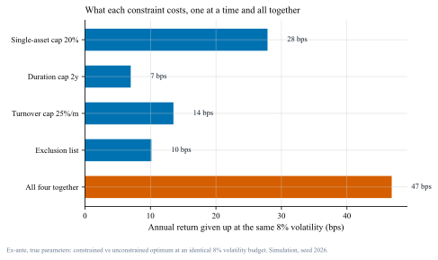
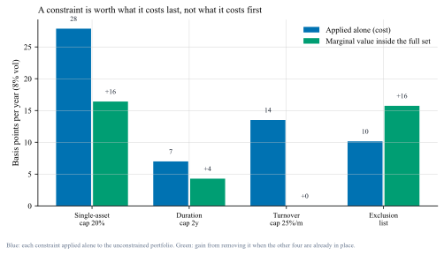
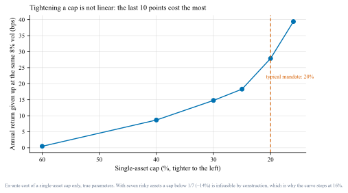
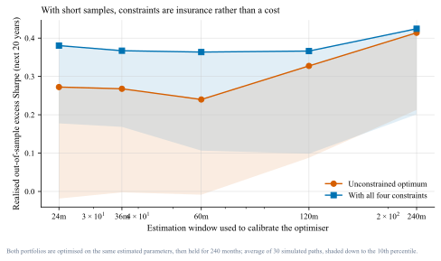

约束的代价：多资产组合里，每个"不许超"都在收费Every constraint has a price
在同样的 8% 波动预算下，四条典型机构约束一共拿走 46.8 bps 的预期收益/年。但故事的另一半是：当你手上的样本很短时，同样的约束不是成本，而是保险——它挡住的是估计误差，不是市场。At an identical 8% volatility budget, four ordinary institutional constraints cost 46.8 bps a year of expected return. The other half of the story: when your sample is short, the same constraints act as insurance against estimation error.
无约束的"最优"很吓人。同样 8% 波动预算下，模型把 63.8% 押在信用债、18% 在 REITs、13.9% 在新兴市场股票——这不是洞察，这是误差放大器。The unconstrained optimum puts 63.8% in credit at an 8% volatility budget — an error amplifier, not an insight.
四条约束合计 46.8 bps/年：单资产上限 20%（27.9）、久期上限 2 年（7.0）、月度换手上限 25%（13.5）、禁投清单（10.1）。但不是简单相加——四条单价算术和是 58.5，合起来只有 46.8，因为约束之间会互相遮蔽。The four constraints cost 46.8 bps in total, against 58.5 bps if added up naively — constraints mask each other.
每条约束的价格取决于它"最后"值多少钱。从全约束组合里单独拿掉换手上限，收益一分钱都不多（+0.0 bps）——它在其他三条存在时已经不起作用了。A constraint is worth what it costs last: removing the turnover cap from the fully constrained portfolio adds nothing.
收紧上限是非线性的。从 60% 收到 40% 只要 8.7 bps，从 20% 再收到 16% 要 39.4 bps。而且 16% 已接近可行下限（7 个资产时低于 1/7 ≈ 14.3% 在数学上就无解）。Tightening is non-linear, and with seven assets a cap below 1/7 is simply infeasible.
样本越短，约束越是保险。30 条随机路径：估计窗口只有 24 个月时，无约束组合的样本外超额夏普 10 分位是 −0.02，全约束组合是 +0.18；样本拉长到 240 个月，两者收敛（0.41 vs 0.42）。With a 24-month estimation window the 10th-percentile out-of-sample Sharpe is −0.02 unconstrained versus +0.18 constrained; at 240 months they converge.
口径 · Scope
本文用7 个资产、年化参数设定的模拟（股票 7%/16%、国债 3.5%/5%、信用债 5%/7%、黄金 4%/14%、REITs 7.5%/18%、新兴市场 8%/20%、现金 2%），基准组合是满足全部约束的政策组合。数字来自模拟，不是任何真实组合的历史业绩；它说明的是机制与量级，不是市场的具体答案。代码：tools/make_figs_constraints.py（固定种子）。A simulated seven-asset universe with stated annual parameters; the benchmark policy portfolio is compliant with every constraint. Numbers illustrate a mechanism and its scale, not real portfolio history. Code included, fixed seed.
01会议上的那句话The sentence in the meeting
"单资产不超过 20%，久期不超过 2 年，月度换手控制在 25% 以内，新兴市场先别碰。""No single asset above 20%, duration under two years, monthly turnover below 25%, and stay out of emerging markets."
这几句话在投委会里从不引起争论，因为每一条听起来都合理，都是风控语言。但没人说出它们的价格。结果通常是：模型给出的权重被手工"修一修"，一年后跟基准比，说不清是判断对了还是被约束磨平了。Nobody argues with these sentences — each sounds prudent. But nobody says what they cost. The weights get hand-adjusted, and a year later nobody can tell whether the view paid off or the constraint sanded it away.
这篇想做的就是把价格算出来：在同样的风险预算下，每条约束、以及它们合在一起，究竟拿走多少预期收益。This note prices them: at a fixed risk budget, how much expected return does each constraint — and all of them together — actually take?
02先把"无约束最优"亮出来Look at the unconstrained optimum first
实验的统一口径是：波动不超过 8%，在此前提下最大化预期收益。这个口径比"最大化夏普"更接近机构实务（风险预算先定，收益尽量争取），也避免了"全押现金"这类退化解。The common yardstick: maximise expected return subject to volatility ≤ 8%. This mirrors institutional practice — the risk budget comes first — and avoids degenerate solutions.
表 1｜无约束最优 vs 全约束组合（同样 8% 波动预算）Table 1｜Unconstrained vs fully constrained, same 8% volatility budget
资产Asset
无约束最优Unconstrained
全约束Constrained
股票Equities
0.0%
20.0%
国债Govt bonds
0.0%
17.1%
信用债Credit
63.8%
20.0%
黄金Gold
4.2%
20.0%
REITsREITs
18.0%
20.0%
新兴市场EM equities
13.9%
0.0%
现金Cash
0.0%
2.9%
预期收益Expected return
5.83%
5.36%
组合久期Portfolio duration
2.55 年
1.83 年
先看左边这列：模型把六成资金压在一个资产上。这不是因为它更了解信用债，而是因为它对预期收益的估计太自信——这正是 Michaud 1989 说的"优化器是误差放大器"。[1]The left column is the point: 64% in one asset, not because the model knows credit better, but because it trusts its own point estimates.[1]
03每条约束的价格The price of each constraint

图 1｜每条约束的价格（同样 8% 波动预算，年化 bps）（来源：本文模拟，tools/make_figs_constraints.py）。
蓝色是单条约束单独施加，红色是四条一起。注意最后那根柱子：四条一起拿走 46.8 bps，小于四条单价的算术和 58.5 bps——约束彼此会遮蔽。Blue: each constraint alone. Red: all four. The total, 46.8 bps, is below the arithmetic sum of 58.5 — the constraints overlap.
单资产上限 20%：27.9 bps——四项里最贵的一组，因为它直接切断"集中押注"的能力。Single-asset cap 20%: 27.9 bps — the most expensive, because it removes concentration precisely where the optimiser wants it.
月度换手上限 25%：13.5 bps——它的价格取决于你从哪里出发。基准组合与最优解差得越远，这条约束越贵。Turnover cap 25%: 13.5 bps — priced relative to the starting portfolio; the further the optimum, the costlier the cap.
禁投清单（去掉新兴市场）：10.1 bps——删掉一个资产等于删掉一维自由度，价格不高但不可逆。Exclusion list: 10.1 bps — deleting an asset removes a degree of freedom: cheap here, but irreversible.
久期上限 2 年：7.0 bps——最便宜的一条，因为它只在优化器想把久期拉长时才咬人。Duration cap 2y: 7.0 bps — the cheapest, because it only bites when the optimiser wants duration.
04约束之间会互相遮蔽Constraints mask each other

图 2｜孤立代价 vs 边际价格（来源：本文模拟）。
读法：蓝柱是"只加这一条要付多少"，绿柱是"在已经有三条的组合里，拿掉这一条能赚回多少"。换手上限的绿柱是 0.0——它在全约束组合里已经不起作用，因为 20% 上限把权重压平之后，本来也没有多少可换。Blue: cost of adding it alone. Green: gain from removing it when the others are present. The turnover cap's green bar is zero — with the 20% cap already flattening weights, there is nothing left to turn over.
推断 · Inference
这意味着"逐条评估约束"是错的方法。正确的问法是组合层面的边际：把候选约束集当成一个包裹，用"逐条加入"和"逐条移除"两个方向各跑一遍，看价格在哪个方向出现。如果两条约束指向同一个方向（比如上限与换手），第二条几乎必然便宜——但这不代表它没用，在极端行情里它可能是唯一有效的那条。Evaluating constraints one by one is the wrong method. Ask the portfolio-level marginal: add each constraint, then remove each from the full set. Two constraints pulling the same way guarantee a cheap second addition — which does not make it useless under stress.
05收紧上限是非线性的Tightening is not linear

图 3｜上限收紧的代价曲线（来源：本文模拟）。
从 60% 收到 40%：8.7 bps。从 20% 收到 16%：39.4 bps。曲线的斜率在右边陡增，因为可选权重集合被压得越来越小。另外要记住一个硬约束：7 个资产、权重和必须为 1 时，任何低于 1/7 ≈ 14.3% 的上限在数学上无解——会上提约束前应该先做这个检查。From 60% to 40%: 8.7 bps. From 20% to 16%: 39.4 bps. And remember the hard limit: with seven assets summing to one, a cap below 1/7 is infeasible.
06但样本短的时候，约束是保险With short samples, constraints are insurance
上面全是"用真实参数算出来的代价"。现实中你并不知道真实参数，只能从历史里估。这时结论会翻转一部分——这就是 Michaud 与 Jagannathan & Ma 之间的张力：一位说约束有害，另一位说"错误的约束反而有用"。[1][2]Everything above is priced with true parameters. In practice you estimate them from history — where a different result appears: Michaud says constraints hurt, Jagannathan & Ma show wrong constraints often help.[1][2]

图 4｜估计窗口 vs 样本外表现（30 条随机路径）（来源：本文模拟；阴影为 10 分位）。
估计窗口只有 24 个月时：无约束组合的样本外超额夏普 10 分位是 −0.02，全约束是 +0.18；窗口拉到 240 个月，两者收敛（0.41 vs 0.42）。约束的价格不是固定的——它随你的样本长度变化，短样本里是负的（即"保费"）。At a 24-month window the 10th percentile is −0.02 unconstrained vs +0.18 constrained; at 240 months they converge. The price of a constraint is not a constant: with short samples it is negative.
这解释了一个常见困惑：为什么"回测里约束拖累业绩"，而"实盘里加了约束反而更稳"。两个说法都对——只是在用不同的样本长度说话。This resolves a common paradox: constraints look like a drag in backtests and like ballast in live portfolios. Both are right — they are just measured on different sample lengths.
07所以我在实际工作里怎么做What I actually do
先报价格，再谈约束。任何约束提案都附一句"在我们 8% 风险预算下约值 X bps"——这句话让讨论从偏好变成取舍。Price it before you debate it. Every constraint proposal carries a line: about X bps at our risk budget.
用包裹定价，不用逐条定价。报告"逐条加入"和"逐条移除"两个方向——只报一个方向会系统性高估约束的代价。Price the package, not the items. Report both add-one and remove-one margins; a single direction overstates the cost.
约束要按"它挡住什么"来设计，而不是按习惯。挡集中度用上限，挡误差放大用收缩与上限，挡流动性用换手，每家机构的约束清单应该长短不一。Design constraints by what they block. Caps block concentration, shrinkage and caps block error amplification, turnover limits block liquidity risk.
先查可行性再上会。1/n 这道小学算术能挡掉一部分提案（n 是可选资产数）。Check feasibility first. The arithmetic of 1/n, with n the number of eligible assets, kills some proposals before the meeting.
样本短时，把约束当成不确定性预算来管：与其纠结"要不要加 20% 上限"，不如问"我凭什么相信 64% 这个数字"。[3]With short samples, treat constraints as an uncertainty budget. The real question is not the cap; it is why anyone believes 64%.[3]
08局限与反方观点Limits and the other side
参数是我设的。预期收益、波动与相关矩阵都是假设，换一组数字，bps 会变。这篇文章的价值在方法（怎么定价、怎么读边际），不在具体数值。The parameters are mine. Change them and the bps change. The contribution is the method, not the numbers.
没有交易成本与税。换手上限的真实价值部分来自成本节省，本文的换手代价只算收益维度，因此低估了换手上限的合理性。No costs or taxes. Part of the value of a turnover limit is the cost it saves, which is outside this measurement.
约束的价值有很大一部分是"防人"而不是"防模型"。禁投清单、单资产上限常来自合规与委托要求，这时候谈 bps 只是让代价可见，不是否定约束。Much of a constraint's value is governance, not modelling. Pricing them makes the cost visible without arguing them away.
反方：为什么不干脆别用优化器？1/N 在文献里常常打赢样本内最优的均值方差组合，而且不需要估计参数。这确实是本文结论的自然延伸——如果你的参数估计不够好，约束或等权是同一件事的两种说法。[4]The other side: why use an optimiser at all? 1/N often beats in-sample mean-variance with no parameter estimation.[4]
09我的判断My take
观点 · Opinion
我认为"约束的代价"这个说法本身就容易误导：约束不是免费的，但它也不是纯粹的损耗——它买到的是对你自己估计误差的保险。样本越长、对参数越有信心，这份保险越贵；样本越短、模型越自信，这份保险越值。"The cost of constraints" is itself misleading: a constraint is not a pure loss — it buys insurance against your own estimation error. The longer your sample, the dearer the insurance; the shorter it is, the more it is worth.
所以我在会上只会说一句："这条约束值 28 bps，它挡住的是我们把 64% 押在一个资产上的风险——如果你们认为那个 64% 靠得住，我们就该删掉它；如果不确定，那就留着。"把偏好问题翻译成价格问题，是我从这套实验里学到的最有用的东西。So the sentence I would use: this constraint costs 28 bps and it blocks a 64% bet; if you believe the 64%, remove it; if not, keep it. Turning a preference into a price is the practical lesson.
Michaud, R. O. (1989). The Markowitz Optimization Enigma: Is 'Optimized' Optimal? Financial Analysts Journal.
doi.org/10.2469/faj.v45.n1.31
Jagannathan, R., & Ma, T. (2003). Risk Reduction in Large Portfolios: Why Imposing the Wrong Constraints Helps. Journal of Finance.
doi.org/10.1111/1540-6261.00580 ·
免费工作论文版：free working paper:NBER w8922
Black, F., & Litterman, R. (1992). Global Portfolio Optimization. Financial Analysts Journal.
doi.org/10.2469/faj.v48.n5.28
DeMiguel, V., Garlappi, L., & Uppal, R. (2009). Optimal Versus Naive Diversification. Review of Financial Studies.
doi.org/10.1093/rfs/hhm075
Clarke, R., de Silva, H., & Thorley, S. (2011). Minimum-Variance Portfolio Composition. Journal of Portfolio Management.
doi.org/10.3905/jpm.2010.2010.1.009